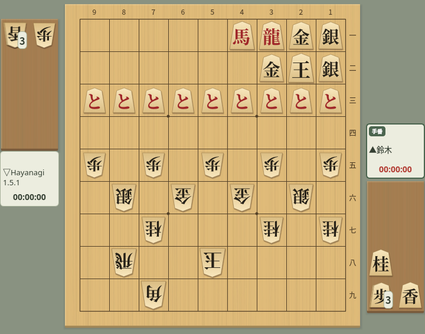
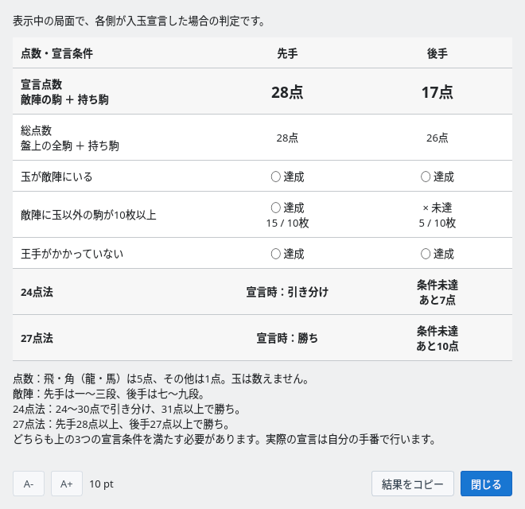
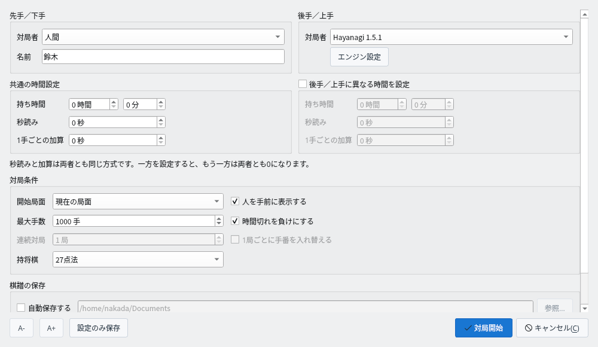
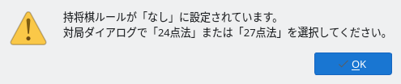
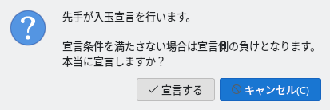
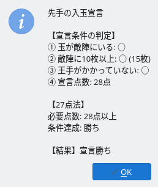
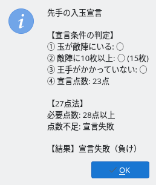
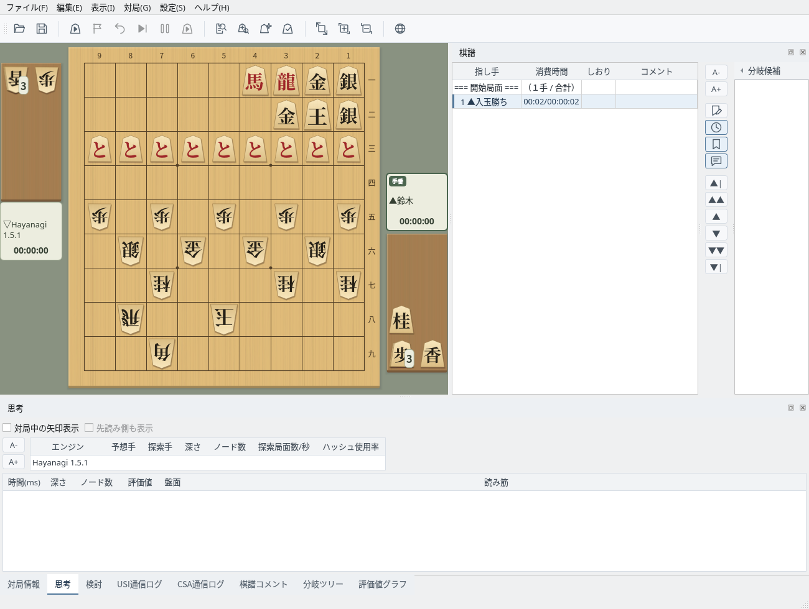

持将棋の点数の確認と入玉宣言の判定
表示中の局面の点数と宣言条件を確認できます
双方の玉が相手陣に入る（入玉）と、詰ませて勝つことが難しくなります。このような局面では、持将棋の点数を確認して入玉宣言できます。この例では先手の玉が２二、後手の玉が５八まで入っています。

入玉の局面：先手は敵陣に駒が15枚あり、持ち駒と合わせて28点
「対局」→「持将棋点数」を選ぶと、表示中の局面で先手・後手がそれぞれ入玉宣言した場合の判定が表示されます。対局中でなくても使えます。
「結果をコピー」で内容をクリップボードにコピーできます。敵陣は、先手は一〜三段、後手は七〜九段です。

持将棋の点数：先手は28点で、27点法なら宣言勝ち、24点法なら引き分け。後手は敵陣の駒が足りず条件未達
対局中に自分の手番で入玉宣言します
入玉宣言を使う対局では、対局ダイアログの「持将棋」で「24点法」または「27点法」を選びます。
| 24点法 | 宣言点数が31点以上で勝ち、24〜30点で引き分け（持将棋） |
| 27点法 | 宣言点数が先手は28点以上、後手は27点以上で勝ち |
どちらも3つの宣言条件を満たす必要があります。「なし」のまま宣言しようとすると、ルールを選ぶよう案内が表示されます。

対局ダイアログ：「持将棋」で24点法または27点法を選ぶ

「なし」のまま宣言したとき：対局ダイアログでルールを選ぶよう案内される
自分の手番で「対局」→「入玉宣言」を選ぶと確認が表示され、「宣言する」で宣言します。宣言条件を満たさない場合は宣言した側の負けになるため、先に「持将棋点数」で確認しておくと安心です。
入玉宣言は人間の対局者が自分の手番で行います。エンジンの手番では宣言できず、エンジン同士の対局ではメニューが無効になります。

入玉宣言の確認：「宣言する」で宣言、「キャンセル」で対局を続ける
宣言条件を判定し、対局を終えます
宣言条件を満たすと宣言勝ちとなり、対局が終わります。結果には各条件の判定と、適用したルールの必要点数が表示されます。

宣言勝ち：条件を満たし、27点法で必要な28点に到達
点数が足りないなど宣言条件を満たさない場合は宣言失敗となり、宣言した側の負け（反則負け）になります。24点法で宣言点数が24〜30点のときは「持将棋（引き分け）」です。

宣言失敗：27点法で必要な28点に対して23点のため、宣言した側の負け
宣言すると、棋譜欄に「▲入玉勝ち」（宣言失敗は「▲反則負け」、24点法の引き分けは「▲持将棋」）が記録されます。エンジンが入玉宣言した場合も同じルールで判定して結果を表示し、条件を満たさなければ宣言したエンジンの負けになります（持将棋のルールが「なし」のときは27点法で判定します）。CSA通信対局では宣言をサーバーへ送り、サーバーが判定します。

宣言後：棋譜欄に「▲入玉勝ち」が記録される